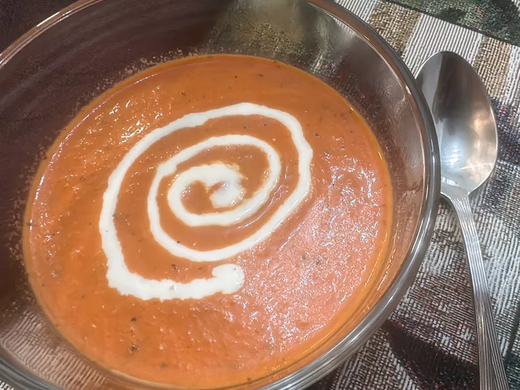

Tomato Soup
Home

Description
This 4-ingredient creamy tomato soup for two blends
roasted onion with canned tomatoes and cream.
It could not be any tastier.
Ingredients
- 1/2 onion, quartered
- 1 (14.5 ounce) can diced tomatoes with basil, garlic, and olive oil
- 2 teaspoons butter
- 1/4 cup heavy cream, divided
Steps
-
Preheat the oven to 375 degrees F (190 degrees C).
-
Roughly quarter the onion half, and separate the pieces.
Place onion pieces on a baking tray. Open the can of diced
tomatoes. Carefully drizzle some of the liquid onto the onion.
-
Roast onions in the preheated oven until soft, about 25 minutes.
Place onions and tomatoes in a high-powered blender, such as a
Vitamix. Cover tightly and blend on high for 40 seconds.
-
Melt butter in a saucepan over medium heat. Carefully pour in the
tomato mixture, and cook, stirring occasionally until hot, about
3 minutes. Stir in 3 tablespoons cream.
-
Ladle soup into bowls, and drizzle remaining cream over each serving.